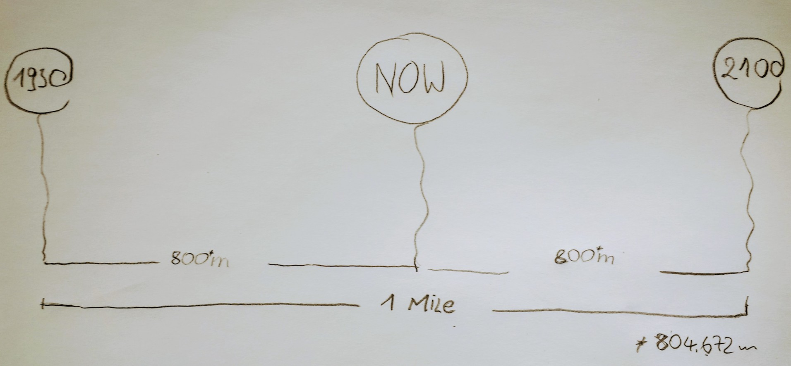
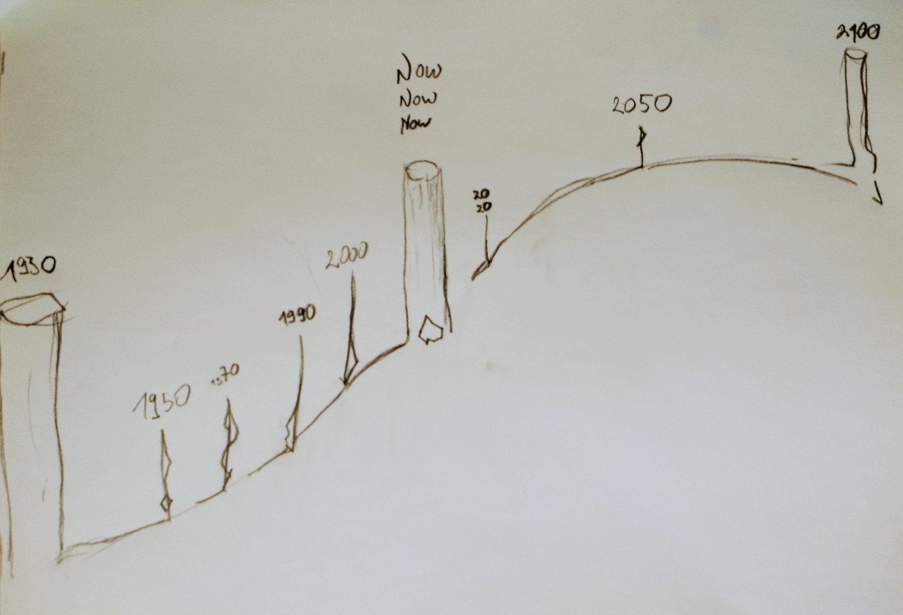

An (art) installation and a celebration of life, of our past, our moment now and our future.
Where do you stand right now - in your life? Where have you been, where are you heading to? Which time frame is relevant for you and us? What is your and our responsibility for the generations coming?
All this questions, as difficult and abstract they are, that is what Our Mile Of Time is all about.
Our Mile Of Time is our life on earth, our time being here, symbolized in a walkable art installation of 1 mile length. Our Mile Of Time is a walkable time axis of 1 mile length, starting in the year 1930 and ending with the year 2100. It creates a personal experience, a real life reference to our abstract model of our lifetime on earth.
It's a mile, a real mile, yes.
Our Mile Of Time starts in 1930 and ends in 2100.
Time - without time - we had no space. We had nothing.
A Mile?
80 years back in time, the year 1930, that is a long time ago and for most of us an abstract thought. But for some of us it is alive - as memories of their childhood. Talk to an old person and just listen - it's a world of memories fully alive and sometimes more real than everything today.
80 years from now, 2100, nobody can ever image what our world will look a like. True. But for my daughter it will be a moment just like this one now - something very real and relevant.
Your and our time?
Nothing is more valuable then your time. All the power you and we have is now, now in this moment. And if not now, then the next moment, and the next.
An installation?
We are wired to see, touch and feel things - then they are real and we react and act. Abstract knowledge is very limited in its power.
On the other side - abstract ideas as ideologies - can be very powerful but more dangerous then "doing nothing". We are smart, but our mind can easily be blinded and manipulated.
Our Mile Of Time is an interactive installation, in the sense that everyone becomes an active part of the installation. Everyone is asked to answer 3 simple questions for herself or himself. Where are you coming from, where are you now and where are you going to.
We look back into our past, into the history of our region, our tribe and our family to understand where we are coming from,
to understand on what base we are staying in this moment here and now. Then we walk into our future,
unwritten and to be created by our hands until the end of our journey, our end - or a new beginning? How will that end look like and when will it be?
This very personal mile is a place to contemplate and stay for a longer time, look back in our family history, our shared history.
What would you do with a time machine build upon your imagination?
We cannot solve our problems with the same thinking we used when we created them. (Albert E.)
What would happen if we create our future and not just let it happen on it's own? Is this even an option we still have?
With great power comes great responsibility. Responsibility is not a choice, we just have it. For all our history we could very much just life in the moment. Our power as humans was very limited. That time is over. Do we need better tools to deal with this responsibility?
I'm just trying to think about the future and not be sad. (Elon Musk)
The project is simple and complex. Basically it means building an one mile long installation in a park, in a city, in the countryside. And then bring it to life.
Where and when it will happen is open and should be open for now. With finding more supporters the project will grow. In this process we will find a place and time which fits best.
It could be as part of a bigger art show or festival, think about an art Biennial, a festival like fusion-festival in Germany or burning man in Nevada. Or it could become a festival on its own.
As time and life has many aspects, so Our Mile Of Time can have many sides and colors.
The many miles are an open textbook, everyone is invited to add more
versions of how the installation could be filled with life and taken to action.
Some first ideas to kick off your imagination are:
We are looking for help to realize this big piece of art, without help this beautiful and powerful installation will stay a great idea, but will never live. If you know someone who could help in the process of realizing this project or you yourself can help realizing it, please contact us.